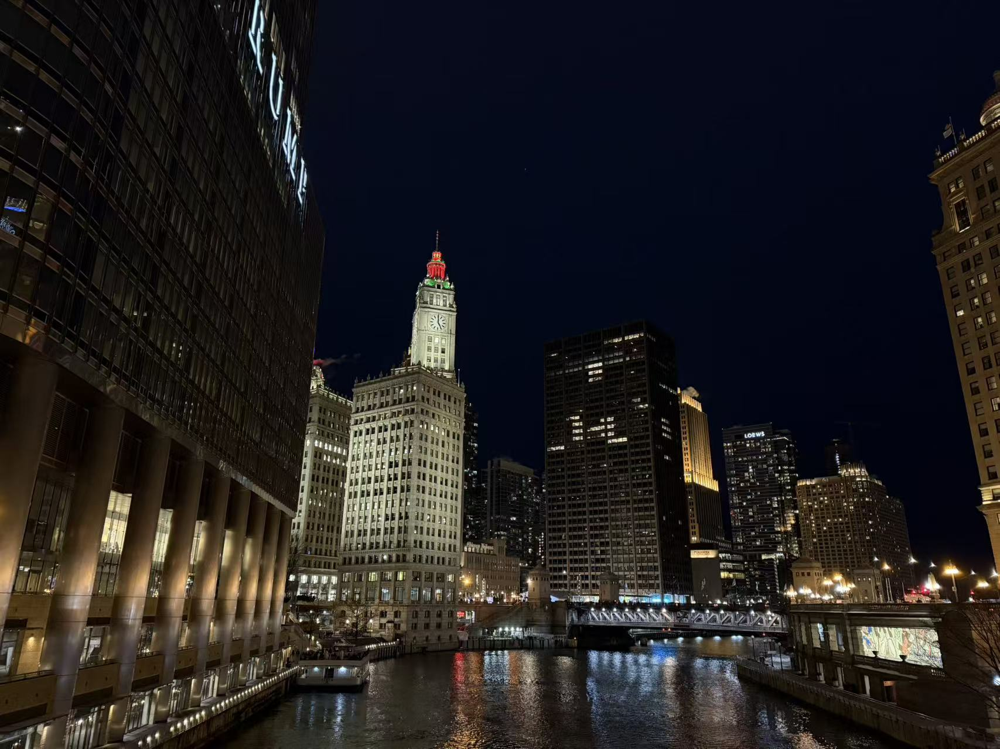
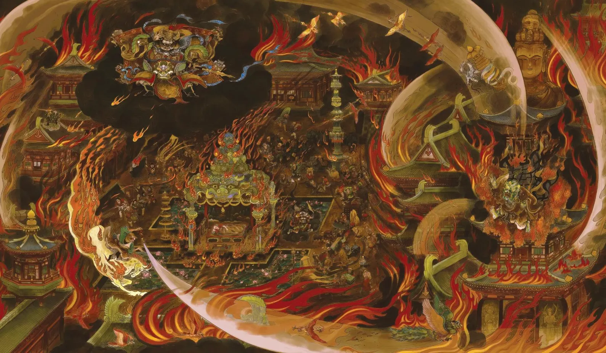
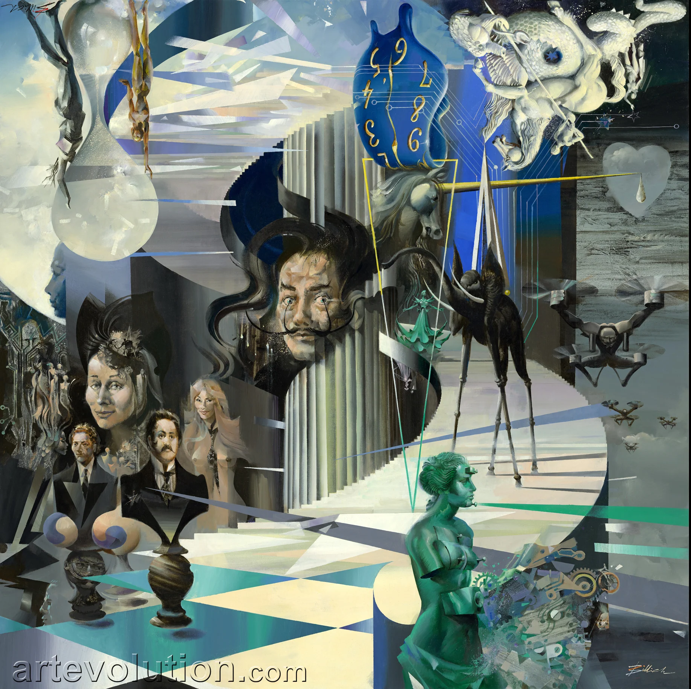
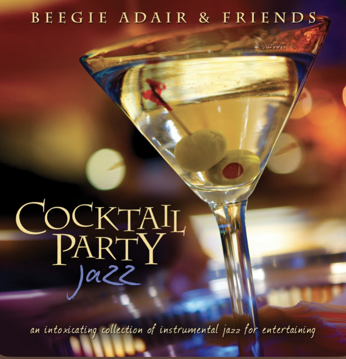
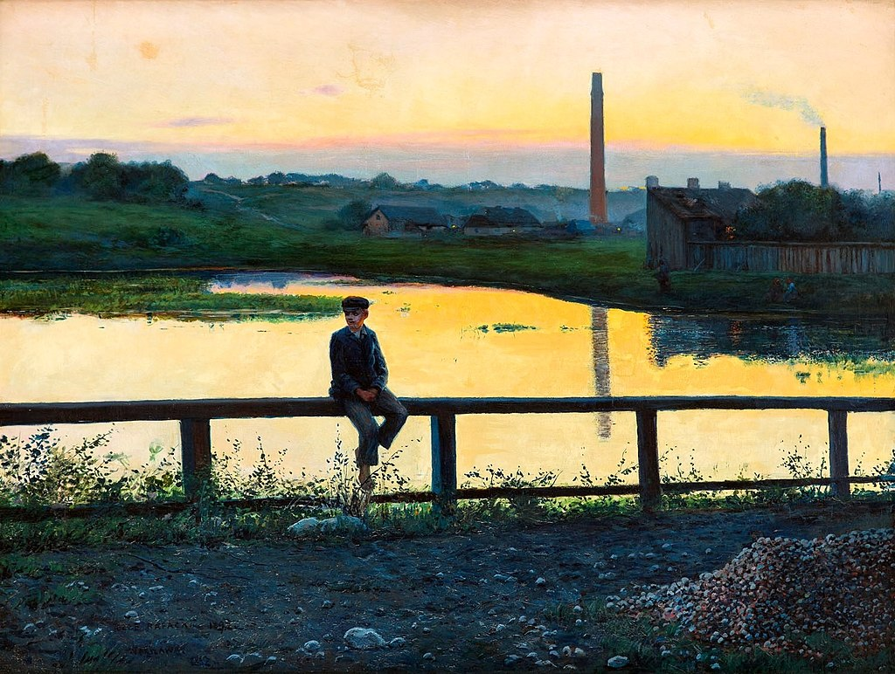
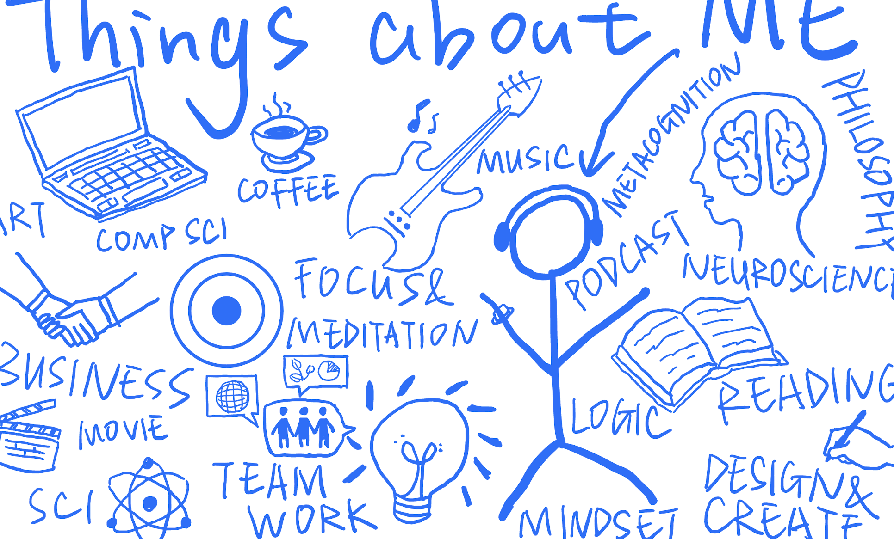
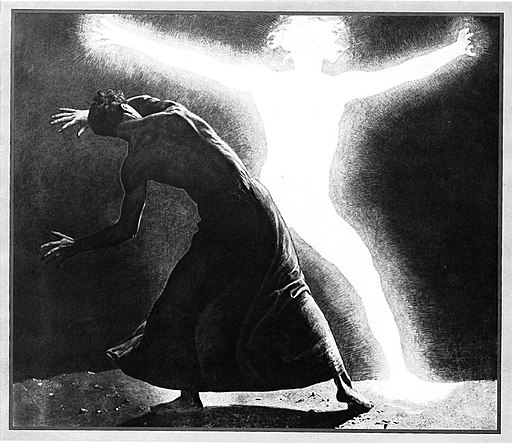

.jpg)

Chicago Freestyle
风城随笔
AIC, Nighthawks, Palmer House — and the back of one's own solitary silhouette in the white restaurant light.
→
关于欲望, 关于花哨, 关于“放荡形骸”的外相
On desire, ornamentation, and the outer appearance of 'licentiousness' — and what the Diamond Sutra has to say about all of it.
→
Evolutionary Connection 1
Steinbeck, dopamine, and the bush of berries — consciousness as the tragic miracle that separates us from rabbits and lions.
→
Just Some Random Thoughts
Loneliness, Fox Cry Review, my dear grandmother, and what it means to reside your heart in the void and the present.
→
Reflections on an Autumn Day
Bruno Schulz, Ludovico Einaudi, the gas station glow — and how humans possess an incomparable divinity.
→
Who's Lynn?
The first page I created.
→.jpg)
Detoxification Program
Build thinking channels. Every organism needs to excrete. The day I became a legal adult, boarding a plane to Paris.
→
On Writers, Pain, and "The Self"
In the wearying desert, there is a terrifying oasis. On Bolaño, self-pity, and the bone-scraping banishment of extreme idealism.
→"In the wearying desert, there is a terrifying oasis."
— Baudelaire